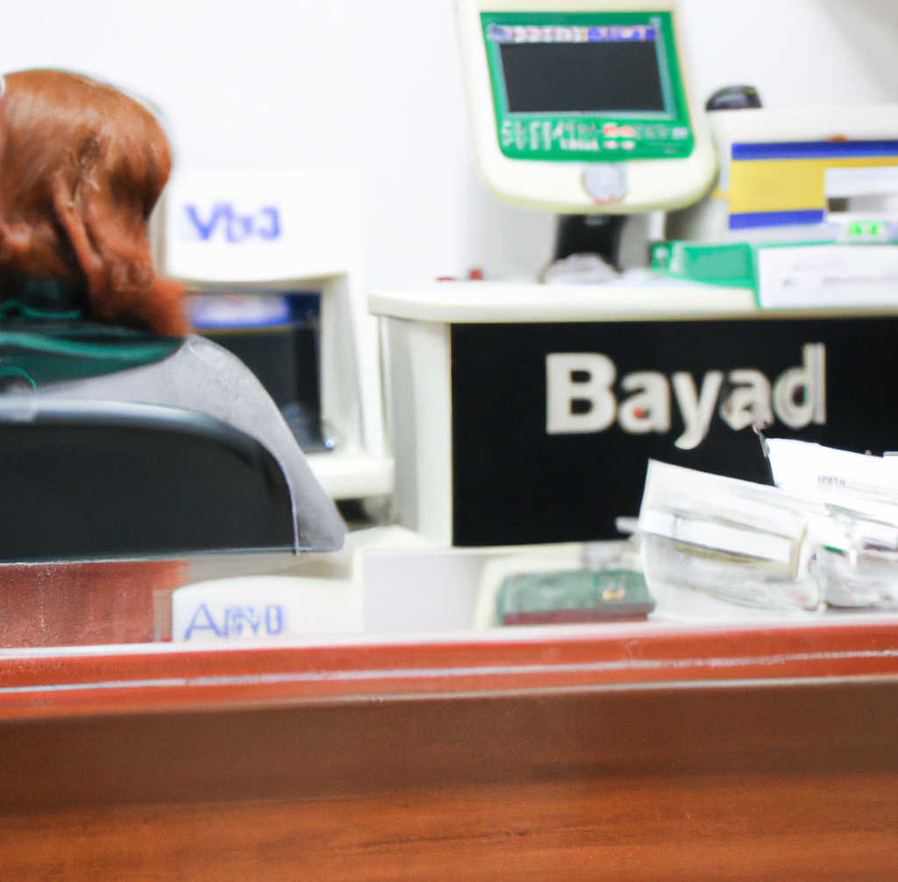
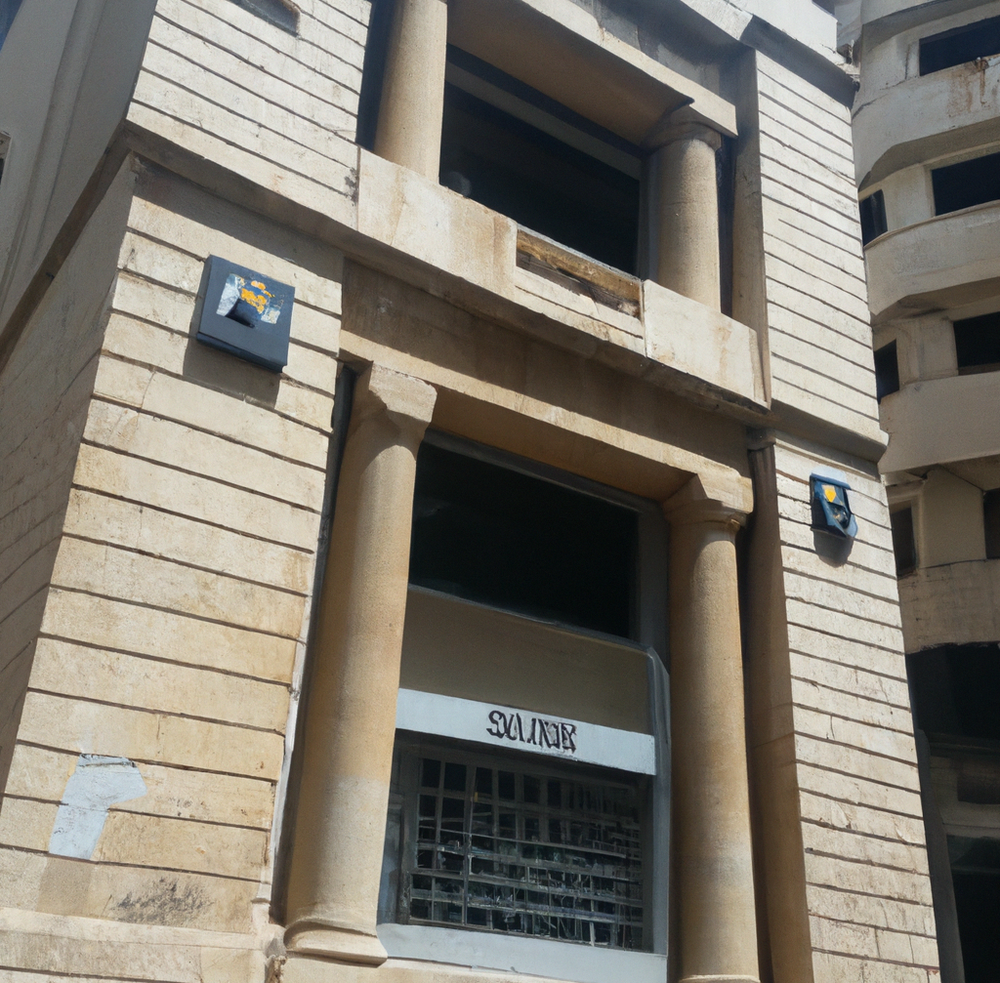

I'm a 50 years old, hard working man from Libanon. Just a couple of years from my retirement. I've been saving up money for 30 years. It wasn't easy. I had to work hard and make sacrifices, but I was determined to do it. I knew that if I was careful and disciplined, I could build a secure future for not only myself but most importantly, my children.
I worked long hours at my job, and I didn't spend much. I didn't go out to eat, and I didn't buy new clothes. I lived frugally, always putting my money into my savings account at the bank.
I was careful and I was disciplined, and I never let myself get tempted by the things that other people had. I was content with what I had, and I was happy to save my money for the future.
It wasn't always easy. There were times when I was tired and I just wanted to relax. There were times when I saw something that I really wanted, and it was hard to resist the temptation to buy it.
But I persevered. I knew that if I was going to achieve my goal, I had to be strong. And in the end, it was all worth it. I had saved a significant sum of money, and I was proud of what I had accomplished.
Several months ago, everything has changed. The banking system of the country collapsed, and people were only able to withdraw a small amount of money from their accounts. I was shocked and confused, and I didn't know what to do.
I went to the bank and tried to get my money, but there simply wasn't enough to go around. The teller told me that there was a limit on how much I could withdraw, and that I would have to wait until the situation improved.
But as the weeks went by, it became clear that there wasn't enough money to pay everyone. The enormity of what was happening hit me like a ton of bricks. All of the money I had saved up during those 40 years was just gone, and there was no way I would ever get it back.
I hate my government. I hate them for what they've done to me, and I hate them for what they've done to my country They promised us stability and security, and they delivered nothing but chaos and destruction.
How could they do this to me? How could they let this happen? I paid my taxes to them, so much taxes during the 40 work years, and all I wanted in return was just a stable future...
I want revenge. I want to make them pay for what they had done. I've already started plotting and scheming, trying to come up with a way to get even. I am willing to do whatever it took to make them pay. If you're from Libanon and feel the same, hit me up. We'll do it together.